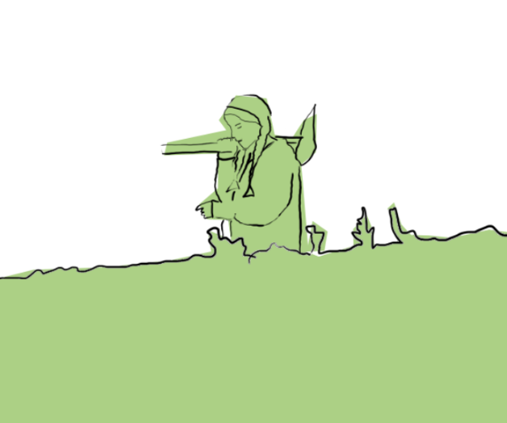
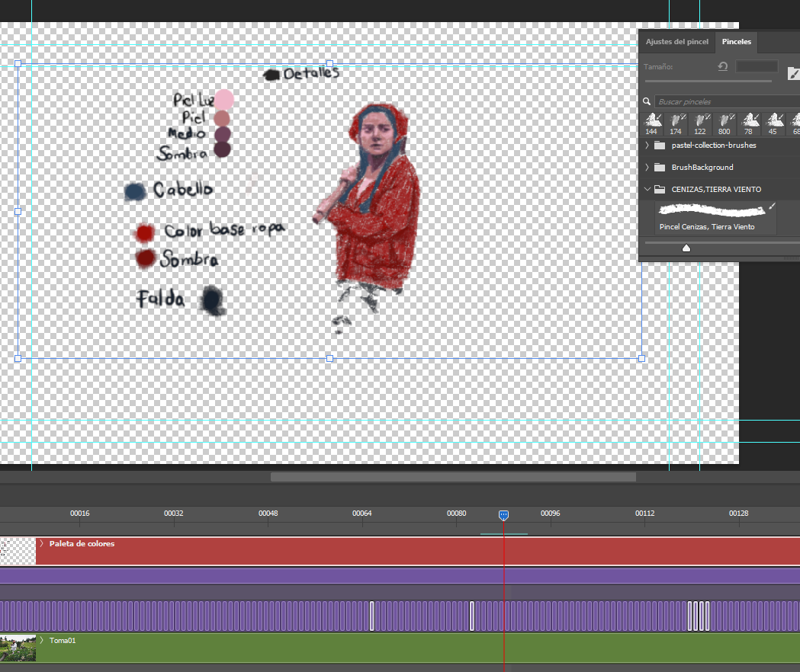

FUEGO
14 AÑOS
María corre por un páramo con un vestido blanco deteriorado.
Una película de Pictoris Studio
¿Qué queda de una vida cuando nunca pudiste elegirla?
01 / 06
02 / LA HISTORIA
FUEGO
14 AÑOS
María corre por un páramo con un vestido blanco deteriorado.
TIERRA
34 AÑOS
Trabaja en un cultivo de papa y se enfrenta a una pérdida.
VIENTO
76 AÑOS
Teje en soledad mientras los recuerdos regresan.
Nuestra historia no propone una superación milagrosa. Explora aquello que nunca pudo ser.
03 / DESARROLLO VISUAL
Del registro de movimiento a una animación con identidad pictórica.
04 / METODOLOGÍA DE PRODUCCIÓN


ASIGNACIÓN→ANIMACIÓN, LIMPIEZA Y COLOR→REVISIÓN→APROBACIÓN
Supervisión técnica: dirección de animación · Validación: comité de dirección
05 / EXPERIENCIA DE PRODUCCIÓN
Ansiedad · Videoclip animado de Pictoris Studio
REFERENCIAS PREPARADAS · ARCHIVOS ORGANIZADOS · SUPERVISIÓN DE ANIMACIÓN
06 / FINANCIACIÓN Y VIABILIDAD
Recursos organizados según las necesidades reales de producción.
$60.000.000 COP
Presupuesto solicitado al FDC
Remuneración por entregables, según duración y complejidad.
Los artistas se vinculan según las necesidades de cada etapa.
Seguimiento de entregas, revisiones y pagos por hitos.
$10 M · Aporte propio previsto
$6 M · Pruebas de animación ya realizadas
Apoyo administrativo y búsqueda de exhibición · En especie
Los aportes previstos y las inversiones ya realizadas no forman parte del presupuesto radicado al FDC.
07 / CRONOGRAMA Y CONTROL DE PRODUCCIÓN
Planificación interna dentro de los 10 meses de producción principal.
Paquetes de planos según complejidad
Kanban y revisiones semanales
Correcciones y aprobación de planos
Supervisión técnica: dirección de animación · Validación artística: equipo de dirección
08 / CIERRE
Una vida atravesada por decisiones que nunca pudo tomar.